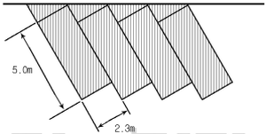
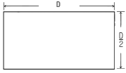
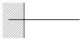
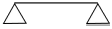
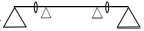
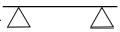
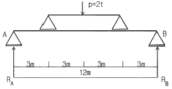
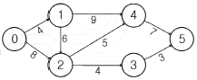

조경기사 (2007-05-13 기출문제)
1과목: 조경사
1. “연꽃의 분천”으로 유명한 파티오식 정원은 ?
- 알함브라 궁원
- 제네랄리페 궁원
- 알카자르 궁원
- 나샤트바 정원
(정답률: 47%)

2. 중세 유럽의 수도원 정원은 흔히 회랑식 중정이라고 불렀는데 다음 중 이와 성격이 유사한 정원 형식은?
- 고대로마의 지스터스
- 고대로마의 페리스틸움
- 고대로마의 아트리움
- 고대로마의 포프티크스
(정답률: 84%)
3. 수도원 공원 계통을 최초로 수립한 사람과 작품이 올바르게 연결된 것은?
- 옴스테드 - 센트럴파크(Central Park)
- 차알스 엘리오트 - 보스턴 파크(Boston Park)
- 차알스 엘리오트 - 비큰히드 파크(Birkenhead Park)
- 옴스테드 - 프로스펙트 파크(Prospect Park)
(정답률: 70%)
4. 일본의 다정(茤庭)에 관한 설명 중 틀린 것은?
- 자연의 한 단면을 강조하여 전체를 표현하러 간다.
- 디딤돌, 돌수반, 석등 등으로 구성된 간소하고 소박한 정원이다.
- 차(茶)를 좋아하는 국민이므로 차나무를 가꾸던 일종의 실용원(實用園)이다.
- 다도(茶道)의 발전과 함께 발달하였다.
(정답률: 62%)
5. 다음 중 괴석의 배치가 없는 원지(苑池)는?
- 경주 안압지(雁鴨池)
- 창경궁 통명전(通明澱) 서편 방지(方池)
- 경북 영양군 입석면 연당리에 있는 서석지원(瑞石池園)
- 소쇄원(瀟灑園)의 방지(方池)
(정답률: 40%)
6. 석죽(石竹)이라 불리운 화초의 이름은?
- 원추리
- 할미꽃
- 패랭이꽃
- 붓꽃
(정답률: 65%)
7. 일본에 정원양식을 전해 준 노자공은 뜰에 수미산을 조성하였다고 하는데, 이 수미산의 사상적 배경으로 적합한 것은?
- 불교의 구산팔해의 중심에 서 있다는 세계관을 배경으로 만들어졌다.
- 신선사상에 의해 가장 중요한 산을 지칭하여 만들었다.
- 백제 중심에 놓여있던 명산을 모방하여 조성하였다.
- 중국에서 가장 중심이 되는 산을 모방한 사대사상의 표현이다.
(정답률: 64%)
8. 다음 중 프랑스의 풍경식 정원에 해당하는 것은?
- 폰텐블로우(Fontainebleau)
- 에름논빌(Ermenonville)
- 생클루(Saint-Cloud)
- 카세르타궁원(Caserta)
(정답률: 93%)
9. 조선시대 궁궐 조경에 곡수거 형태가 남아 있는 곳은?
- 창덕궁 후원 옥류천 공간
- 경복궁 후원 향원정 공간
- 창경궁 통명전 공간
- 경복궁 교태전 후원 공간
(정답률: 94%)
10. 분구원(Kleingarten)에 대한 설명 중 틀린 것은?
- 주택난을 해소하기 위해 고안된 시설이다.
- 세레베르(Schreber)박사가 제창했다.
- 1차 대전 중 시민의 식량난을 완화시키는데 공헌했다.
- 오늘날 분구원은 레크리에이션을 위한 화훼 재배장으로 성격이 바뀌었다.
(정답률: 65%)
11. 이탈리아 르네상스 후기에 조성된 정원은?
- 이솔라 벨라장(Villa lsola Bella
- 란테장(Villa Lante)
- 에스테장(Villa Deste)
- 카스텔로장(Villa Castello)
(정답률: 83%)
12. 경상북도의 도산서당에 있는 '절우사'에 심어졌던 식물로만 짝지워진 것은?
- 매화나무, 대나무, 국화, 난초
- 매화나무,소나무, 난초,복숭아나무
- 소나무, 매화나무,대나무, 국화
- 소나무,매화나무, 파초, 난초
(정답률: 84%)
13. 강릉 선교장(船橋莊) 안의 활래정지(活來亭池)의 꾸밈형태는?
- 원지원도형으로 섬이 하나이다.
- 방지원도형으로 섬이 셋이다.
- 방지방도형으로 섬이 하나이다.
- 원지방도형으로 섬이 셋이다.
(정답률: 77%)
14. 다음 안압지에 대한 설명 중 틀린 것은?
- 안압지는 월성에 있던 동궁의 궁원으로 당시에는 월지라고 하였다.
- 안압지의 호안은 남쪽과 서쪽지안이 북쪽과 동쪽지안보다 낮다.
- 연못의 호안은 직선과 곡선으로 조성되어 있다.
- 연못에는 연꽃을 바닥에 직접 기르지 않고 정자형나무틀에 심어 물속에 넣었던 것으로 추정된다.
(정답률: 66%)
15. 다음 중 우리나라의 '읍성(邑城)'에 대한 설명으로 틀린 것은?
- 시원적(始原的) 도시 특성을 보이고 있다.
- 보통 면적은 99000~165300m2, 지름은 300~500m 정도의 공간적 규모를 갖고 있다.
- 배후지나 주변지역에 대한 군사적 방어 기능만을 담당한다.
- 인구규모는 대부분 300~500호에 인구 800~1500명 정도이다.
(정답률: 87%)
16. 최초의 영국 풍경식 정원을 제안한 조경가는?
- 스테판 스위처(Stephen Switzer)
- 월리엄 켄트(William Kent)
- 란셀로트 브라운(Lancelot Brown)
- 험프리 랩턴(Humphry Repton)
(정답률: 67%)
17. 중국정원의 기원에 관한 설명 중 틀린 것은?
- 문왕의 도읍지 부근에 영대와 영소가 조성되었다.
- 은시대 귀족들은 삼림지대에서 수렵을 행하였다.
- 포(圃)는 채소를 심는 곳을 일컫는다.
- 원(園)은 금수를 키우는 곳을 일컫는다.
(정답률: 70%)
18. 중국 조경의 특징 중 태호석을 고를때 고려하는 요소로 관계가 없는 것은?
- 추(皺)
- 경(景)
- 누(漏)
- 투(透)
(정답률: 47%)
19. 일본 에도시대 소굴원주 등에 의해 조원되어 장수를 기원하는 '학구(鶴龜)의 정원'으로 유명한 곳은?
- 대선원
- 은각사
- 고봉암
- 금지원
(정답률: 50%)
20. 프랑스 평면기하학식 정원에서 총림을 채택한 목적이 아닌 것은?
- 중앙무대 배경
- 빛의 음양대비
- 비스타 구성
- 숨겨진 즐거움
(정답률: 57%)
2과목: 조경계획
21. 정밀토양도에서 토양의 명칭을 ‘GK B3’ 라고 명명하였을 경우 ‘B‘ 는 무엇을 의미하는가?
- 침식 정도
- 경사도
- 토성
- 비옥도
(정답률: 54%)
22. 도시공원 및 녹지 등에 관한 법률상 도시공원의 효용을 위한 시설이 아닌 것은?
- 교양시설
- 가로시설
- 공원관리시설
- 편익시설
(정답률: 50%)
23. 다음 중 자연공원법상 용도지구의 분류가 아닌 것은?
- 공원자연보존지구
- 공원밀집마을지구
- 공원밀집보전지구
- 공원자연환경지구
(정답률: 71%)
24. 도로 조경설계에서 고려되는 설계방법 중 가장 우선적으로 중요하게 검토 되어야 할 항목은?
- 가시권
- 노선
- 도로식재
- 속도
(정답률: 60%)
25. 도시공원 및 녹지 등에 관한 법률상 공원조성계획의 경미한 변경이 아닌 것은?
- 공원시설부지면적의 10% 미만의 범위 안에서의 변경
- 공원시설의 위치 변경
- 휴게소, 긴 의자, 화장실 등 33제곱미터 이하의 공원 시설의 설치
- 공원시설물 용적률의 20% 미만의 범위 안에서의 증설
(정답률: 36%)
26. 도시공원 및 녹지 등에 관한 법률상 도시계획시설사업의 시행자지정신청서 및 실시계획인가신청서에 첨부하여야 할 설류가 아닌 것은?
- 공사설계서
- 녹지의 관리방법을 기재한 서류
- 녹지의 규모 및 공사비 내역서
- 사용 또는 수용되는 토지나 건물의 소재지. 지번. 지목 및 소유권 외의 권리의 명세서
(정답률: 56%)
27. 레크리에이션 적정수와 산정을 위한 중력 모델의 내용으로 옳은 것은?
- 현재와 장래의 수요 예측
- 인구와 거리에 따른 단기적 수요 예측
- 여러 변수에 의한 장기적 수요 예측
- 외부발생 변수를 고려한 수요 예측
(정답률: 29%)
28. 대지면적 200m2 이상으로 건축조례가 정하는 기준에 따라 식수 등 조경에 관한 필요 조치를 하여야 하는 경우는?
- 국토의 계획 및 이용에 관한 법률에 의하여 지정된 자연환경보전지역 안의 건축물
- 면적이 6000m2 미만인 대지에 건축하는 공장
- 대지에 염분으로 조경 등의 조치를 하는 것이 불합리한 경우로서 건축조례가 정하는 건축물
- 자연녹지지역에 건축하는 건축물
(정답률: 65%)
29. 국토의 계획 및 이용에 관한 법률에 의한 용도지역 안에서 건폐율의 최대 상한선으로 틀린 것은?
- 농림지역의 경우 20% 이내
- 도시에서 녹지지역의 경우 30%이내
- 자연환경보전지역의 경우 20% 이내
- 관리지역에서 계획관리지역의 경우 40% 이내
(정답률: 40%)
30. 인간이 가지고 있는 개인적 공간(personal space)의 설명 중 잘못된 것은?
- 개인 주변에 형성되어 개인이 점유하는 공간을 뜻한다.
- 인간에게 일정지역에의 귀속감을 주어 심리적 안정감을 준다.
- 정신적인 혹은 물리적인 외부의 위협에 대한 완충작용을 하는 방어의 기능이 잇다.
- 거리가 좁을수록 사적인 그리고 많은 양의 정보 교환이 이루어질 수 있다.
(정답률: 41%)
31. 경계를 표시하는 상징적 요소인 담장이나 문주의 설치로 주민들에게 높은 소유의식을 부여하는 방법은 환경심리학의 어떤 연구 결과가 응요된 예인가?
- 개인적 공간 (personal space)
- 영역성(territoriality)
- 혼잡 (crowding)
- 반달리즘 (vandalism)
(정답률: 75%)
32. 아래의 그림을 보고 4개의 차량을 주차시키기 위한 45˚주차장의 면적을 구하며 얼마인가? (단, 빗금친 면적만 계산한다.)

- 44m2
- 56.58m2
- 67.16m2
- 72m2
(정답률: 83%)
33. 국토의 계획 및 이용에 관한 법률에서 구분하는 광장의 종류가 아닌 것은?
- 교통광장
- 미관광장
- 일반광장
- 건축물부설광장
(정답률: 65%)
34. 기본계획 과정의 하나인 기본구상에 대한 설명 중 틀린 것은?
- 토지이용 및 동선을 중심으로 하여 계획 및 설계의 기본 골격을 짜는 단계이다.
- 제반 자료의 분석과 종합을 기초로 한다.
- 프로그램에서 제시된 문제들의 해결을 위한 구체적인 개념적 접근이다.
- 기본계획안(master plan)이 만들어진 후에 실시한다.
(정답률: 58%)
35. 인공지반을 녹화할 때 가장 중요하게 고려해야 할 하중은?
- 고정하중
- 적재하중
- 적설하중
- 풍하중
(정답률: 67%)
36. 도시공원 및 녹지 등에 관한 법률에서 정하는 공원별 도시공원 안의 건축물의 건폐율 옳은 것은?
- 소공원 : 100분의 1
- 근린공원(3만 제곱미터 미만) : 100분의 25
- 문화공원 : 100분의 30
- 묘지공원 : 100분의 2
(정답률: 63%)
37. 조경계획에 있어 토지이용계획 수립의 내용과 과정이 옳은 것은?
- 적지분석 - 토지이용분류 - 종합배분
- 진입공간선정 - 적지선정 - 종합배분
- 적지분석 - 종합배분 - 진입공간선정
- 토지이용분류 - 적지분석 - 종합배분
(정답률: 58%)
38. 공장을 중심으로 한 부변의 녹지대 조성에 대한 설명 중 틀린 것은?
- 내륙지방과 임해공장, 매립지와 산지 및 평지, 도시지역과 농촌지역 등의 위치에 따라 수종선정을 구분하여야 하고 공장의 규모에 따라 수종선정을 달리 한다.
- 공장녹화용수로 사용되는 수목은 침영수류가 상록활엽수류 보다 내연성이 크다.
- 임해공장의 경우 내조성을 가진 수종을 배식한다.
- 배식수종은 녹지 뒤에도 가급적 천연경신을 도모할 수 있는 것이 좋다.
(정답률: 75%)
39. 주택단지설계에 있어서 Defensible Space(범죄예방공간)에 대해서 주장한 사람은?
- Oscar Newman
- Garrett Eckbo
- C.N.Schulz
- Kevin Lynch
(정답률: 65%)
40. 우리나라의 자연공원 지정 기준이 아닌 것은?
- 자연경관의 보전상태가 양호하여 훼손 또는 오염이 적으며 경관이 수려할 것
- 산업 개발로 경관의 훼손이 심하여 보존이 필요한 곳
- 문화재 또는 역사적 유무물이 있으며, 자연경관과 조화되어 보전의 가치가 있을것.
- 국토의 보전. 이용. 관리 측면에서 균형적인 자연공원의 배치가 될 수 있을 것.
(정답률: 70%)
3과목: 조경설계
41. 조경계획 및 설계를 위한 시각적 질의 향상을 목적으로 한 접근방법으로 보기 어려운 것은?
- 이미지 어빌리티(lmage ability)
- 시각적 복잡성(Visual complexity)
- 식각적 선호성 (Visual preference)
- 영역성(Territoriality)
(정답률: 65%)
42. 시각적 복잡성과 시각적 선호도의 관계를 가장 올바르게 설명한 것은?
- 시각적 복잡성이 증가함에 따라 시각적 선호도도 증가한다.
- 시각적 복잡성이 증가함에 따라 시각적 선호도가 감소한다.
- 시각적 복잡성이 적절할 때 가장 높은 시각적 선호도를 나타낸다.
- 시각적 복잡성과 시각적 선호도는 아무 관계가 없다.
(정답률: 73%)
43. 다음 중 경관구성상 랜드마크(land mark)적 성격이 아닌 것은?
- 에펠탑
- 어린이대공원
- 남대문
- 피라미드
(정답률: 74%)
44. 경관의 효과에 관한 설명으로 적합하지 않은 것은?
- 어떤 경관의 지각이 사람에게 미치는 총체적인 반응을 경관의 효과라 한다.
- 경관의 효과에는 다양하여 특징적인 효과를 찾아 내기는 어렵다.
- 사람들의 경관 효과에 대한 민감성은 각기 다르다.
- 설계가는 경관 속에서 최종적인 미학적 타당성을 찾아야 한다.
(정답률: 55%)
45. 조경구성에 있어 비대칭적 구성(혹은 내재적 균형)의 설명으로 틀린 것은?
- 똑같지는 않더라도 비중이 같은 시각적 요소가 대칭의 중심축 좌우에 있을 때 성립된다.
- 지렛대의 원리가 성립된다.
- 보다 인간적이고 동적인 균형을 얻을수가 있다.
- 관찰자가 균형의 중심을 지나가지 않도록 유도 해야 효과가 크다.
(정답률: 31%)
46. 다음 중 바우하우스(Bauhaus)에 대하여 바르게 설명한 것은?
- 독일의 바이마르에 세웠던 종합 조형학교이다.
- 파리에 있는 유명한 공예 연구소이다.
- 20세기 초 이탈리아의 밀라노에 세웠던 건축학교이다.
- 미국의 뉴욕에 세웠던 공예학교이다.
(정답률: 58%)
47. 먼셀(Munseel) 색상환의 색상(色相)은 그 기본색을 다음 중 몇 가지로 구분하는가?
- 10가지
- 12가지
- 24가지
- 100가지
(정답률: 61%)
48. “ 삼각형은 위험의 표시(sign)이기도 하고 산(山 )의 그림일 수도 있고, 수직관계의 상징을 표현할 수도 있다.“ 라는 말은 다음 중 무엇을 의미하는가?
- 형태(from)를 지칭하는 것이다.
- 대상(對象)의 인상(image)을 지칭하는 것이다.
- 인식과정(cognition process)을 지칭하는 것이다.
- 상대적 크기(scale)를 지칭하는 것이다.
(정답률: 70%)
49. 다음 [보기]의 샤슬러(Max schasler) 논리를 설명한 것 중 옳은 것은?
- 자연의 생물이 그 소재로 되어 있는 것은 인간의 손에 의하여 이루어지는 예술미에 참여할 수 없다.
- 정원은 예술이 아니고 인조 환경이다.
- 정원은 예술이이라기 보다는 하나의 기교이다.
- 정원은 생명력 있는 물체를 소재로 하고 있으므로 예술이라기 보다는 과학이다.
(정답률: 39%)
50. 벤치의 배치 계획시 sociopetal 형태로 했다면 인간의 심리적 요소 중 어느 욕구에 해당하는가?
- 사회적 접촉에 대한 욕구
- 안정에 대한 욕구
- 프라이버시에 대한 욕구
- 장식에 대한 욕구
(정답률: 72%)
51. 다음 중 취수, 가공법, 기타 사항을 기입하기 위하여 도형에서 빼내는 선은?
- 치수선
- 절단선
- 가상선
- 지시선
(정답률: 70%)
52. 다음 레오폴드의 경관분석 방법에 대한 설명 중 틀린 것은?
- 정신물리학적 접근에 의한 분석방법이다.
- 하천을 낀 계곡을 대상으로 경관가치를 계량호한 방법이다.
- 특이성 계산과 계곡 및 하천 특성을 계산한 방법이다.
- 여러 개 경관대상지와 상대적 비교를 위한 방법이다.
(정답률: 60%)
53. 동선설계의 원CLR 중 적합하지 않은 것은?
- 특별한 목적이 없는 한 동선은 가급적 최단거리로 설계한다.
- 보행동선과 차량동선은 원칙적으로 분리한다.
- 선택의 다양성을 주기 위해 Y자형 교차부 설계가 좋다.
- 차도의 경우 교차부를 최소화 한다.
(정답률: 82%)
54. 조경설계기준에 의한 그네 설계 기준으로 옳은 것은?
- 2인용을 기준으로 높이 3.0~3.5m 를 표준 규격으로 한다.
- 2인용을 기준으로 폭 4.5~5.0m 를 표준규격으로 한다.
- 그네는 남향이나 서향으로 한다.
- 집단적으로 놀이가 활발한 자리 또는 통행량이 많은 곳에 설치한다.
(정답률: 24%)
55. 굵은 1점 쇄선의 사용법으로 옳은 것은?
- 기준선 중 특히 강조하고 싶은 것에 사용한다.
- 치수 보조선으로 사용한다.
- 무게 중심선으로 사용한다.
- 기술, 기호 등을 표시하기 위해 사용한다.
(정답률: 32%)
56. 물체의 측면이나 하향으로 빛을 비춤으로써 이루어지며 수직적인 배경의 표면에 독특한 그림자를 연출하고. 수목의 경우 바람에 의해 잎이나 가지가 흔들리게 되어 새로운 영상을 만드는 조명방식은?
- down lighting
- moon lighting
- silhouette lighting
- shadow texture lighting
(정답률: 63%)
57. 공사에 있어서 시방서, 도면 등 설계도서 간에 내용이 상이한 경우, 그 적용 순서가 높은 설계도서부터 나열된 것은?
- 설계도 → 특별시방서 → 표준시방서 → 공사내역서
- 공사내역서 → 특별시방서 → 표준시방서 → 설계도
- 표준시방서 → 특별시방서 → 설계도 → 공사내역서
- 특별시방서 → 설계도 → 표준시방서 → 공사내역서
(정답률: 34%)
58. 미끄럼대에서 안전을 고련한 미끄럼판의 기울기는 얼마가 가장 적합한가?
- 20˚~25˚
- 30˚~35˚
- 40˚~45˚
- 50˚~55˚
(정답률: 78%)
59. 다음 중 단면도와 투시도에 사용되는 일반적인 그래픽심벌에 해당되는 것은?
- 수직면의 요소
- 이동과 소리의 요소
- 빛과 바람의 요소
- 원경(배경)적인 요소
(정답률: 87%)
60. 제도용 필기구에 대한 설명으로 틀린 것은?
- H의 숫자가 커질수록 단단하고 흐리다.
- 조경설계도면 작성에는 일반적으로 B가 많이 사용된다.
- 홀더는 굵은 선을 그릴때 사용한다.
- 비가 오면 연필심이 상대적으로 흐리게 느껴진다.
(정답률: 78%)
4과목: 조경식재
61. 가로수는 정형식(整形式)으로 식재되는 것이 보통인데 보도의 경우 일반적인 식재 간격은?
- 1~3m
- 4~5m
- 8~9m
- 13~15m
(정답률: 47%)
62. 일반적인 방풍림에 있어서 방풍효과가 미치는 범위는 바람 아래쪽일 경우 수고(樹高)의 몇배 정도인가?
- 5~10배
- 15~20배
- 25~30배
- 35~40배
(정답률: 65%)
63. Taxus cuspidata var nana Hort.의 설명 중 틀린 것은?
- 원대가 여러 대로 갈라진다.
- 전정을 하지 않아도 수형이 정돈된다.
- 정원의 교목 하부에 식재한다.
- 생태적 특성은 음수이며, 적윤지의 토양에 생육이 적당하다.
(정답률: 31%)
64. 그 해에 자란 가지에 꽃눈이 분화하여 월동 후 봄에 개화하는 형태의 수종이 아닌 것은?
- Hibiscus syriacus L
- Forsythia koreana NAKAI
- Cercis chinensis BUNGE
- Chaenomeles lagenaria KOIDZUMI
(정답률: 53%)
65. 패치 형태의 생태학적 기능을 쉽게 측정하는 4가지 주요 형태의 속성에 포함되지 않는 것은?
- 신장화
- 단편화
- 굴곡화
- 주변부
(정답률: 25%)
66. 다음 중 일반적으로 11월에 백색 꽃이 피는 수종은?
- Albizzia iulibrissin Duraz
- Lagerstroemia indica L
- Fatsia japonica Decne. et Planch
- Prunus padus L
(정답률: 65%)
67. 복엽으로서 소엽이 5매 내외이고, 생장이 빨라 공원의 속성 조경에 가장 적합한 수종은?
- Acer negundo L.
- Acer ginnala MAX
- Acer saccharinum L.
- Acer palmatum THUNB.
(정답률: 50%)
68. Sciadopitys verticillata S. et Z. 의 특성을 설명한 내용 중 옳은 것은?
- 잎이 3개씩 난다.
- 어릴때 생장이 빠른 편이다.
- 수형이 산만하여 전정을 하여야 한다.
- 종자는 길이가 1.2CM로 날개가 있고, 자엽이 2장이다.
(정답률: 39%)
69. 눈 쌓인 겨울에 빨간색의 열매를 감상할 수 있는 조경 수목은?
- Sorbus alnifolia
- Ilex serrata
- Prunus sargentii
- Cornus kousa
(정답률: 35%)
70. 식물의 내음성을 결정하기 위한 간접적인 판단 방법이 아닌 것은?
- 수관밀도의 차이
- 자연전지의 정도와 고사의 속도
- 광도를 달리한 입지에서 생장상태의 비교
- 수고 생장속도의 차이
(정답률: 71%)
71. 일반적인 식재 평면도에 수록될 내용으로 적합하지 않은 것은?
- 사용되는 시설들의 형태 표현
- 식재 부지의 간략한 분석 내용 기록
- 식물 재료의 표현
- 식물 규격의 표시
(정답률: 53%)
72. 수목을 이식할 때 뿌리분의 모양을 다음과 같이 하면 부적합한 수종은?

- Pinus thunbergiana Franco
- Picea abies Karst
- Betula taushii KOIDZ
- Populus deltoides Marsh
(정답률: 18%)
73. 라운키에르(Raunkier)에 의한 식물의 생활양식의 유형이 아닌 것은?
- 초본(草本)식물
- 반지중(半地中)
- 일년생(一年生)식물
- 다육(多肉)식물
(정답률: 39%)
74. 다음 수목 중 아황산가스에 강한 수종이 아닌 것은?
- Torreya nucifera
- Juniperus chinensis var kaizuka
- Cinnamomum camphora
- Picea abies
(정답률: 38%)
75. 다음 중 일반적인 수목의 생육에 적합한 토양은?
- 사토나 사양토
- 사양토나 양토
- 식토나 식양토
- 식토나 사양토
(정답률: 40%)
76. 숲은 식물사회군집 측면에서 다양성과 복잡성을 살려야 한다. 다음 중에서 가장 적게 고려되어도 되는 사항은?
- 수종의 다양성
- 수관층의 다양성
- 지형의 다양성
- 계절을 통한 다양성
(정답률: 62%)
77. 경관 조각의 크기와 생태계 과정에 미치는 요소가 아닌것은?
- 생산량과 생물량
- 침식과 영양소 유실
- 물과 수계
- 통로와 피신처
(정답률: 10%)
78. 다음 중 물푸레나무과(Oleaceae)에 속하지 않는 것은?
- Abeliophyllum distichum
- Chionanthus retusus
- Ligustrum japonicum
- Styrax japonica
(정답률: 29%)
79. 다음 수종 중 일반적으로 붉은 색으로 단풍드는 나무로만 구성된 것은?
- 칠엽수, 느티나무, 계수나무, 낙우송
- 배롱나무, 양버즘나무, 떡갈나무, 백합나무
- 붉나무, 화살나무, 마가목, 감나무
- 고로쇠나무, 벽오동, 피나무, 층층나무
(정답률: 86%)
80. 다음 중 정수식물(추수식물)이 아닌 것은?
- 줄
- 부들
- 창포
- 자라풀
(정답률: 50%)
5과목: 조경시공구조학
81. 다음 구조물에 대한 설명 중 트러스(Truss)의 설명으로 옳은 것은?
- 축 방향으로 압축력을 받는 단일 부재(部材)
- 보와 기둥 즉, 수직재와 수평재가 강절점으로 접합 된 구조체
- 2개 이상의 직선 부재의 양단을 마찰없는 힌지로 연결한 구조물
- 부재 축이 곡선으로 되어 있는 구조체
(정답률: 65%)
82. 다음 보의 표시 방법을 도해한 것 중 게르버보에 해당하는 것은?




(정답률: 60%)
83. 다음 조경 실시 설계의 과정을 순서별로 나열한 것 중 가장 합리적인 것은?
- 시공도 작성 - 품셈 - 일위대가 - 적산
- 상세도 작성 - 일위대가 작성 - 물량산출 - 내역서작성
- 물량산출 - 내역서작성 - 상세시공도 작성 - 공사조서작성
- 재료산출 - 품셈결정 - 물량조정 - 상세도 작성
(정답률: 58%)
84. 모르타르 배합비 1:3 을 사용하기 적합한 작업은?
- 치장 줄눈, 방수 및 중요한 개소
- 벽돌 쌓기 및 중요개소
- 미장용 마감 바르기, 쌓기 줄눈
- 미장용 초벌 바르기
(정답률: 54%)
85. 부재의 단면적이 5cm x 5cm 되는 기둥에 50 kg의 수직하중이 작용할 때 응력도는?
- 0.5 kg/m2
- 2kg/m2
- 10 kg/m2
- 1250 kg/m2
(정답률: 75%)
86. 다음 콘크리트 공사에 대한 설명 중 옳은 것은?
- 콘크리트의 배합방법에는 용적배합, 질량배합, 복식배합이 있는데 복식배합을 하는것이 가장 정확하다.
- 경사면에 콘크리트를 칠 때는 밑에서부터 쳐 올라간다.
- Cold joint는 온도변화, 기초, 부등침하 등에서 균열을 방지하기 위하여 설치한다.
- 일반적인 구조물 공사의 콘크리트 양생 방법은 손쉬운막 양생법을 이용한다.
(정답률: 50%)
87. 측량의 종류에 관한 기술 중 틀린 것은?
- 지형측량은 지표면 상의 자연 및 인공적인 지물의 상호위치 관계를 수평적 또는 수직적으로 관측한다.
- 노선측량은 도로, 철도, 운하 등의 교통로 등과 같이 폭이 좁고 길이가 긴 구역의 측량을 말한다.
- 농지측량은 토지의 위치, 경계, 면적, 종류 등을 알기위한 측량이다.
- 건축측량은 건축물의 계획이나 공사 실시에 관한 측량이다.
(정답률: 43%)
88. 다음 중 측량과 관련된 설명중 틀린 것은?
- 잔차란 최확값과 관측값의 차를 말한다.
- 일반적으로 반복 관측한 값에 큰 오차가 있을 때는 착오가 있음을 알 수 있다.
- 최확값이란 어떤 관측량에서 가장 높은 확률을 갖는 값을 말한다.
- 정오차란 관측값의 신뢰도를 표시하는 값이다.
(정답률: 56%)
89. 대규모의 잔디 지역에 자동으로 살수 시키기에 가장 적합한 살수기는?
- 분무 살수기
- 분무입상 살수기
- 분류 살수기
- 회전입상 살수기.
(정답률: 75%)
90. 토사의 종류 중 견질토사에 대한 설명으로 옳은 것은?
- 삽 작업을 위해 상체를 약간 구부릴 정도의 토질
- 삽을 상체의 힘으로 퍼낼 수 있는 정도의 토질
- 괭이나 곡괭이를 사용할 정도의 토질
- 호박돌 크기의 돌이 섞이고 굴착에 약간의 화약을 사용해야 할 정도의 단단한 토질
(정답률: 67%)
91. 아래 구조물에서 A 지점의 반력 RA는?

- 0.5t
- 1.0 t
- 1.5 t
- 2.0 t
(정답률: 50%)
92. 흙을 높이 쌓아 두면 미끄러져 내려와 경사면이 안정되는데 이 경사면의 각도를 무엇이라 하는가?
- 마찰각(摩擦角)
- 내부 마찰각
- 전도각(轉倒角)
- 휴식각(休息角)
(정답률: 83%)
93. 다음 조경시설물 공사에 필요한 가설공사 중 규준틀 설치에 관한 설명으로 틀린 것은?
- 수평 규준틀은 벽돌 쌓기, 블록 쌓기 등 조적 공사의 수평 보기에 사용된다.
- 규준틀은 통나무 또는 각목을 사용한다.
- 규준틀은 공사 착수에 있어서 대지에 건축물의 위치를 결정하기 위해 설치한다.
- 수평 규준틀은 규준틀 설치 평면 배치도를 작성하여 개소당 품을 적용하는 것이 원칙이다.
(정답률: 40%)
94. 콘크리트의 반죽 질기의 정도에 따라 작업의 난이도 및 재료분리에 저항하는 정도를 나타내는 굳지 않은 콘크리트의 성질을 나타내는 용어는?
- consistancy
- workability
- plasticity
- finishability
(정답률: 63%)
95. 마사토를 다지면서 성토하여 운동장을 조성할 때 1000m3가 필요하다. 마사토를 굴착하여 적재용량 10m3의 덤프트럭으로 운반할 때 필요한 흐트러진 상태의 마사토를 모두 운반하려면 소요되는 덤프 트럭은 몇 대인가? (단, 마사토의 C: 0.85, L : 1.20 )
- 142대
- 120대
- 118대
- 84대
(정답률: 16%)
96. 우리나라에서 가장 많이 활용되는 벽돌쌓기로 시공이 용이하고, 벽체 모서리 벽 끝에 칠오토막을 써서 만드는 튼튼한 벽돌쌓기 방식은?
- 미국식 쌓기
- 영국식 쌓기
- 프랑스식 쌓기
- 네덜란드식 쌓기
(정답률: 58%)
97. 네트워크 공정표에 대한 설명 중 틀린 것은?
- 작업(activty)의 작업명은 실선의 하단, 공사기간은 실선의 상단에 표시한다.
- 여유시간(float)은 공기에 영향을 주지 않고 지연시킬 수 있는 시간이다.
- 더미(dummy)는 작업이 행해지지 않는 파선의 화살표로 나타낸다.
- 한계경로(CP, critical path)는 개시 결합점에서 완료결합점에 이르는 최장경로를 말한다.
(정답률: 74%)
98. 대부분 목재의 역학적 성질은 비슷하다. 다음중 소나무의 강도(kg/m2)를 크기순으로 바르게 표시한 것은? (단, 목재의 상태는 기건상태이다.)
- 인장강도 > 휨강도 > 압축강도 > 전단강도
- 휨강도 > 인장강도 > 압축강도 > 전단강도
- 휨강도 > 압축강도 > 인장강도 > 전단강도
- 압축강도 > 인장강도 > 전단강도 > 휨강도
(정답률: 46%)
99. 어느 골재 시료의 절건상태의 무게는 500g, 표면건조 내부포수상태의 무게는 650g, 습윤상태의 무게는 700g이다. 이 골재의 흡수량은?
- 50g
- 100g
- 150g
- 200g
(정답률: 77%)
100. 각 공사별로 재료의 할증률이 바르게 짝지어진 것은?
- 붉은 벽돌 : 5%
- 시멘트 벽돌 : 3%
- 조경용 수목 :5%
- 잔디 : 10%
(정답률: 64%)
6과목: 조경관리론
101. 다음 중 바이러스에 의해 수목에 발생하는 수병은?
- 뽕나무모자이크병
- 뽕나무오갈병
- 동백나무시들음병
- 단풍나무점무늬병
(정답률: 65%)
102. 다음 옥외 조명등의 관리상 열효율이 높고, 연색성은 낮으나 투시성이 뛰어나며, 설치비는 비싸지만 유지 관리비가 저렴한 것은?
- 금속 할로겐등
- 나트륨등
- 수은등
- 형광등
(정답률: 50%)
103. 다음 중 살균제인 것은?
- 지오판수화제(톱신엠)
- 주론수화제(디밀린)
- 부타유제(마세트)
- 아이비에이액제(옥시베론)
(정답률: 알수없음)
104. 제초에 관한 설명 중 틀린 것은?
- 제초제는 처리 방법에 따라 토양처리형 제초제, 잡초처리형 제초제로 구분할 수 있다.
- 제초제 살포는 인력 제초보다 저렴하므로 자주 실시 하는 것이 효과적이다.
- 제초를 하는 것은 식물의 보호상, 미관상, 위생상의 효과를 얻는다.
- 초지로서 이용하는 공간에는 제초보다는 일정한 초장을 유지시키는 관리 방법도 바람직하다.
(정답률: 48%)
1⑤. 조경설계기준에서 정한 잔디의 일반적인 관리 중 잔디깎기에 관한 설명으로 틀린 것은?
- 잔디의 깎기 높이와 횟수는 잔디의 종류, 용도, 상태등을 고려하여 결정한다.
- 한 번에 초장의 약 1/3 이상을 깎지 않도록 한다.
- 초장이 3~4Cm 에 도달할 경우에 깎으며, 깎는 높이는 1~2Cm 를 기준으로 한다.
- 한국잔디류는 생육이 왕성한 6~8월에 한지형 잔디는 5, 6월과 9, 10월경에 주로 깎아준다.
(정답률: 23%)
106. 다음 수목의 뿌리돌림에 관한 설명 중 옳은 것은?
- 원뿌리는 깊게 뻗어 있어 단근할 필요가 없다.
- 뿌리 내림이 왕성하고 수목 생육이 활발한 시기에 실시한다.
- 뿌리돌림을 할 때는 단근량과 전정량은 비례 되게 함이 좋다.
- 낙엽 활엽수는 수액이 발동하기 시작한 때부터 신록이 우거지기 직전까지가 뿌리 돌림의 제1적기이다.
(정답률: 62%)
107. 조경시설물의 정비, 점검 방법으로 틀린 것은?
- 배수구는 정기적으로 점검하여 토사나 낙엽에 의한 유수의 방해를 제거한다.
- 어린이공원에서의 유희시설물 회전부분은 충분한 윤활유 공급을 실시한다.
- 표지, 안내판 등의 도장상태나 문자는 수시 점검한다.
- 아스팔트 포장과 같이 내구성이 있는 것은 전면개보수 할 때까지 점검하지 않아도 된다.
(정답률: 95%)
108. 다음 네트워크 공정표의 주공정일 수는?

- 20일
- 22일
- 15일
- 25일
(정답률: 75%)
109. 짧은 폐쇄.회복기에도 최대한의 회복효과를 얻을 수 있고, 따라서 이용자에게 불편을 적게 줄 수 있으며, 특히 손상이 심한 부지에 가장 이상적인 레크레이션 공간의 관리방안?
- 완전방임형 관리 전략
- 폐쇄 후 자연회복형
- 폐쇄 후 육성관리
- 순환식 개방에 의한 휴식기간 확보
(정답률: 73%)
110. 일반관리계획 내용 중 운영관리계획에 해당하는 것은?
- 기획
- 급여
- 광고
- 노무
(정답률: 40%)
111. 오동나무나 대추나무의 빗자루병 등 마이코플라스마(macoplasma)에 의한 수병의 치료에 가장 좋은 효과를 보이는 항생물질은?
- 테트라사이클린(tetracycline)
- 사이클로헥시마이드(cycloheximide)
- 다이센스테인리스(dithanestainless)
- 파제이트(parzte)
(정답률: 77%)
112. 일반적으로 운동공원의 잔디밭 뗏밥주기는 연간 몇 회가 적합한가?
- 1회
- 2회
- 4회
- 7회
(정답률: 43%)
113. 비탈면 보호공법 중에서 식생공이 아닌 것은?
- 편책공
- 종자뿜어붙이기공
- 식생구멍공
- 줄떼심기공
(정답률: 86%)
114. 조경시설물의 유지관리에 관한 내용 중 틀린 것은?
- 내구연한까지는 별다른 보수점검을 생략해도 좋다.
- 기능성과 안전성이 확보되도록 유지 관리한다.
- 주변환경과 조화를 이루며, 경관성과 기능성이 있도록 관리한다.
- 기능 저하에는 이용빈도나 고의적인 파손 등의 인위적인 원인이 많다.
(정답률: 54%)
115. 공원에 의자를 설치하고 준공하였을 때 시공상의 하자가 아닌 것은?
- 의자가 흔들린다.
- 목재부위가 불에 타서 훼손되었다.
- 의자가 기울어져 있다.
- 옹이가 있어 목재가 부러졌다.
(정답률: 82%)
116. 응애류(mite)의 방제법으로 사용하는 살충제가 아닌것은?
- 펜프로.테트라디폰 유제(알파인)
- 아크리나스린 액상수화제(총채탄)
- 벤조메 유제(씨트라존)
- 비티 수화제(슈리사이드)
(정답률: 50%)
117. 시공현장에서 철근을 관리하는 방법으로 틀린 것은?
- 재료의 저장과 가공장은 각기 독립된 다른 장소에 설치한다.
- 비닐, 각목 등을 사용하여 자재가 지면에 닿지 않게 한다.
- 종류별, 길이별로 정돈한다.
- 토막재료는 전용하는 일이 없도록 관리한다.
(정답률: 53%)
118. 관리대상의 기능을 어떻게 하면 효율적이며 적절하게 발휘케 하는가를 목표로 하는 관리의 유형은?
- 이용관리
- 운영관리
- 유지관리
- 시공관리
(정답률: 59%)
119. 다음 중 소나무혹병의 중간 기주로 적합한 것은?
- 송이풀
- 졸참나무
- 까치밥나무
- 향나무
(정답률: 25%)
120. 도시공원이나 자연공원을 막론하고 레크리에이션 관리상 가장중요하고 민감한 항목은?
- 이용자 관리
- 자원관리
- 유지관리
- 서비스관리
(정답률: 42%)